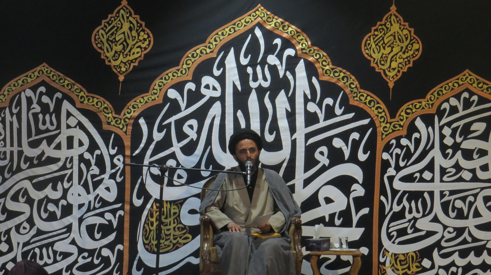
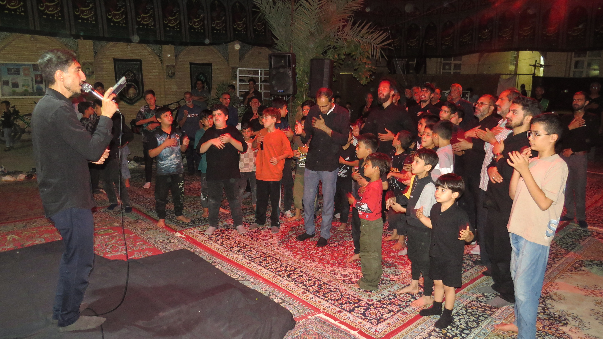
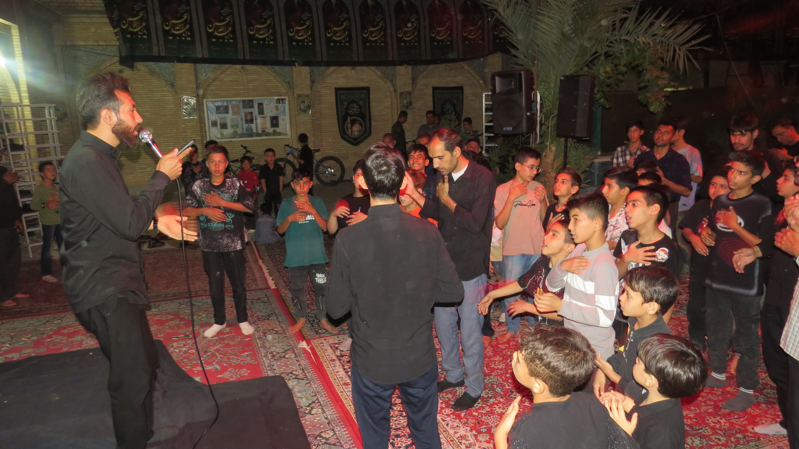

به مسجد بقیةالله خوش آمدید
مسجد بقیةالله، محلی برای عبادت، آرامش، فعالیتهای فرهنگی و برگزاری مراسم مذهبی است.
درباره مسجد
به پایگاه اینترنتی مسجد بقیةالله خوش آمدید. در این سایت میتوانید اخبار، برنامههای مذهبی، تصاویر و فیلمهای مسجد را مشاهده کنید.
📢 آخرین اطلاعیهها
برگزاری مراسم مذهبی
مراسم مذهبی مسجد بقیةالله در زمان اعلامشده برگزار میشود.
📅 بهزودیدعای ندبه
دعای ندبه در مسجد بقیةالله برگزار میشود.
🕐 ساعت ۶:۳۰ صبحجلسه قرآن
جلسه قرآن و برنامههای فرهنگی مسجد برگزار میشود.
🕐 ساعت ۲۰:۰۰📸 گالری تصاویر



🎬 فیلمهای مسجد
📍 ارتباط با مسجد
آدرس مسجد
آدرس دقیق مسجد بقیةالله را اینجا وارد کنید.
تلفن تماس
شماره تلفن مسجد را اینجا وارد کنید.
برنامه مسجد
برنامههای مذهبی و فرهنگی مسجد در سایت اطلاعرسانی میشود.